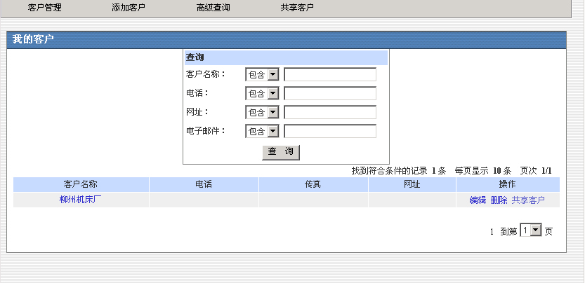
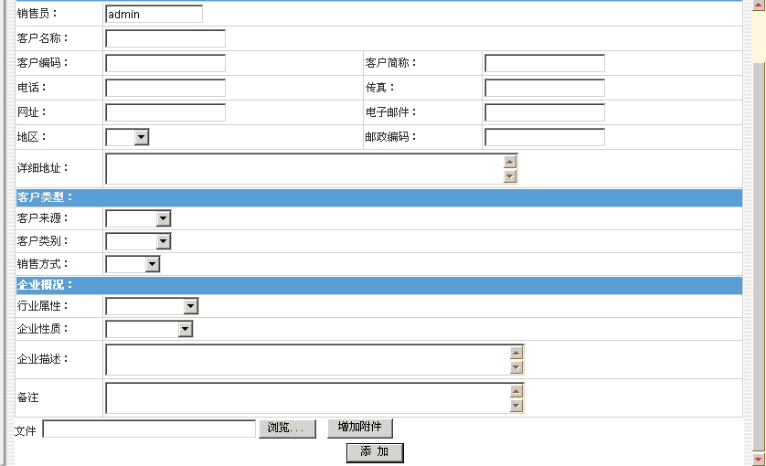
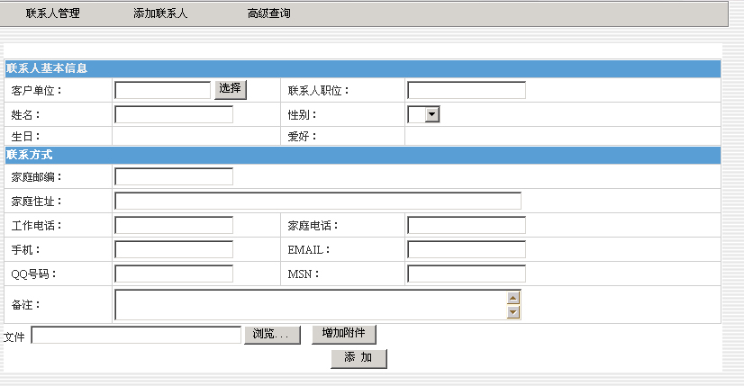
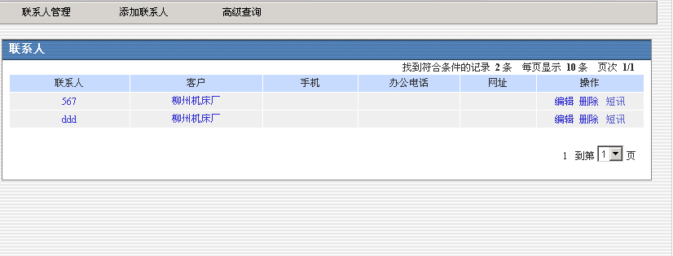
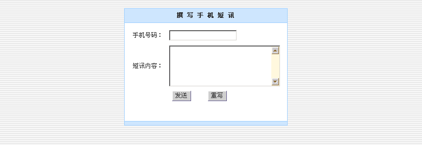

客户管理 |
| 销售管理模块主要是一个类似企业CRM系统的管理模块，这其中涉及到客户信息的管理、产品销售和供应商的管理。 |
“客户关系”包括五个菜单项：客户基本信息管理、联系人信息管理、客户服务管理和综合查询。 1. 客户基本信息管理客户基本信息管理主要是实现新建客户信息和对客户的基本信息进行管理和查询。 |
|  |
| 新建客户信息的时候，要求用户输入客户的各种详细信息，以便以后查询 |
|  |
新建客户的时候，需要设定该客户是否共享，或者设定共享范围，在共享范围之外的人（销售主管除外）是看不到该客户的详细信息的。 |
2.联系人信息管理 联系人信息管理，联系人信息包括联系人的单位、姓名等信息，联系人信息管理包括新建、高级查询和管理功能。 |
 |
|  |
|  |
| 短讯通过手机短消息发送给联系人。 |
3.高级查询 高级查询是对所有字段信息进行查询。 |